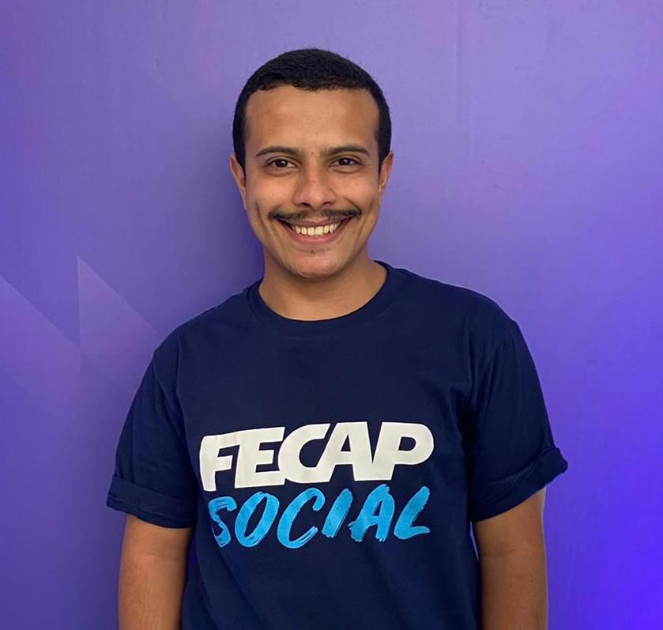

Times e integrantes
Presidente
Victor Santos – entrou na FECAP Social em 2021, como auxiliar financeiro, responsável por orçamentos. Se tornou líder do time em abril de 2023 e presidente em janeiro de 2024
Victor Santos – entrou na FECAP Social em 2021, como auxiliar financeiro, responsável por orçamentos. Se tornou líder do time em abril de 2023 e presidente em janeiro de 2024